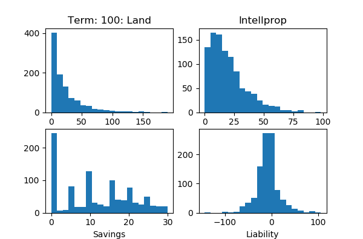

資産市場の簡易シミュレーション
■概要
「土地」と「知的財産」からなる資産市場のシンプルなシミュレーションまたはゲームを Python で行う。そこには贅沢品と賃金だけからなる商品市場をからめる。
「知的財産」市場の総額を一定に保つよう各期減価しさえすれば、自然な借金増加と「平均への回帰」があるために、資産市場の現金が商品市場に流入することでのバランスの崩れを、商品市場の賃金からの借金返済の現金が資産市場へ還流することで補い、自然に再度バランスが取れ、ほぼ定常状態に致ることが確認された。
■はじめに
《ミクロ経済学の我流シミュレーション》の micoro_economy_*.py は今ひとつ安定しなかった。初期値にも敏感に反応し、初期値のわずかな変化があとあとにかなり影響しているらしいことがあった。「定常状態」に致るとき、それが初期値と同じようになれば安定するのではないかという考えが私にはある。そのためには定常状態になるための流入を別に作ったり、初期値をよりよいものにする必要があると考える。
特に大きく初期値と変わるのは、貯蓄であった。貯蓄の初期値は指数分布にしているが、シミュレーションが進むとだんだん平等になっていき、指数分布でなくなる。そもそも指数分布はどのようなときに現れるか、それに関する記事が《なぜ統計学では釣り鐘型の分布が使われ、物理現象では右肩下がりの分布が使われるのか - 小人さんの妄想》にあった。そこでは『富の分布について』という記事が再引用されている。
＞
富の分布について（駒澤大学学術機関リポジトリより）
＞
Random sharing model偶然に出会った、二人の経済主体の間で二人の富の総額をランダムに分割する、という交換ルールを何回も繰り返すモデルである。(…)このモデルは、偶然に出会った2人が自分たちの所有する富の総和を、ギャンブルで分け合うモデルと言う様にも解釈できよう。(…)このルールに基づいて富の交換を、分布の形が変化しなくなるまで繰り返すと富の分布は指数分布になることが知られている。
＜
＜
「偶然に出会った2人が自分たちの所有する富の総和を、ギャンブルで分け合う」ということの経済的意味は何だろう？ このままでは毎回、指数分布になるようにランダムに設定しなおす形でしか micro_economy_*.py に活かせそうにない。それではあまり意味がない。
指数分布が本来の性質であるとした場合、贅沢品の購入は、とにかくお金を持っていれば購入し、贅沢品は「資産」にカウントされるようなことはないから、(過剰)消費を通じた富(資産)の平等がはかられているという見方もできるのかもしれない。…と考えるに致り、そこから、資産取引を別に考えてはどうだろう？…と考えるに致った。これが本稿の実験を行うに致った動機的な部分である。
資産取引としては以前の私の記事《外作用的簡易経済シミュレーションのアイデアと Perl による実装》の simple_market_0.pl の考え方を持ってこれないだろうか？ 資産に応じて資産を生み、その売買が起こるとき、売った側は現金(マウナスの借金)を手に入れ、買った側には借金ができる。
売った側の現金は贅沢品消費で取り崩され平等になっていく。借金があるうちは贅沢品消費はできず、借金返済にまわす。…とするのが現実的でないか。必需品購入した上で残った給与の半分を借金返済にまわし、残りを贅沢品消費にしていったらどうだろう？ micro_economy_*.py の特徴から、給与から資産市場にまわるのは贅沢品消費だけを考えればよさそうだ。
しかし、この場合、売った側の現金は商品取引の利益として吸い上げられ市場からなくなるから、借金だけが残ることになる。借金はたまり続け、すべての人が、借金をし、半分返済、半分贅沢品購入…ということになり、借金の意味がなくなるのではないか？
いや、借金返済の現金がある。これは資産市場の現金が商品市場に吸い上げられるのとは逆で、商品・給与市場の現金が資産市場に還流することになる。両者がバランスする条件とは何だろうか？ これを確かめるのがとりあえずの本稿の目的になる。
資産市場だけでモデルを作るにはどうしたらいいだろう？ 資産市場に必要だと私が思う特徴を書き出してみる。
●借金があるほうが売り易い。資産があるほうが、高く売れる。
●現金+資産があるほうが借金のチャンス＝資産を買うチャンスがある。
●現金をたくさん持っている者が贅沢品を買うのが、平等化のチャンスになる。
●贅沢品を買って現金を減らすのは資産があり借金があるという状態にしやすくするため？
贅沢品を買って現金を減らしても、借金状態に陥るほうが資産が買われやすくなり、高く資産が売れることで逆に現金を手に入れ、再び資産を手に入れるチャンスが広がる…とできるのではないか。
「借金があるほうが売り易い。資産があるほうが、高く売れる。…贅沢品を買って現金を減らすのは資産があり借金があるという状態にしやすくするため？」という部分。借金をする者としない者がいて、それが期を経るごとに借金をする者が有利になり、遺伝的アルゴリズムに似て、借金をしない者が淘汰されていく…というモデルも考えられる。しかし、定常状態を導くのが目標で、淘汰されるような部分は定常状態にはないから、そこは淘汰されきった状態のみを考えればよいとして、そこまでは踏み込まない。
「定常状態」にしたいという動機があったが、上のアイデアのままでは、資産が一方的に増えることになる。まぁ、「散逸構造」みたいなものもあってだからすぐダメだとはならないが、普通に考えれば、資産の総額を一定にする操作があればよい。増えた分を全体からさっぴけばよい。
ただ、土地などのことを考えるとこの考え方は「リアル」ではない。そこで、資産として毎期総額を無理矢理一定にするために取引等がなければ自然に減価していく「知的財産」と減価のない「土地」を資産の代表として別々にとらえることにする。
「土地」は減価しないかわりに増価しない。現実だと、固定資産税があって所有にコストがかかったりするが、それは今回、考えないことにする。
「知的財産」は持っていると、知的財産をさらに手に入れやすくなるとする。買う側の知財が多いほうが、多くの知財を受け取れる。売る側は知財が多いほうが価格が高く売れる。資産の評価額は、売買価格より高くなるようにする。
知的財産の売買に少し土地もからませたい。
現実では土地があると借りやすくなるということがある。それをマネるには、知的財産 + 土地 - 借金 だけ借りられるようにするか…。これは、リアルかもしれないが、経済の成長を弱めるので、今回は取り入れないことにする。
知的財産は、上の「富の分布」を参考に、売る側と買う側の知的財産を足し合わせた額について乱数をかけようか？ そして、双方の知財額で按分して支払う。…と。…いや、これだと土地を活かす余裕がなくなる。売る側の土地も足すか？…。しかし、こうすると売る側のほうが知財を多く持ってるとおかしなことになりそうだ。
足し合わせて乱数というのはやめる。売る側の 知的財産+log(土地) に関して乱数を取り売買価格を得る。そして、買う側が 1 + log(知的財産) 倍の評価額を資産として詰むことにする。log(知的財産) は log が効き過ぎる場合は sqrt などを使えばよい。log() は模式的にそう述べてるだけで詳しい関数は後述する。
持ってる現金は土地に変えたいものである。知的財産は、現金の多寡よりも、むしろ失業に関連してそうな気がするが、今回はそれは考えないでおこう。あと知財を持つのは、個人というより会社な気がするが、それも今回は無視しよう。
どうして借金をしまくって資産を買わないのか？ それは、資産の価値を見出せないから…とする。土地については、売る側が売る気になっていないから。知的財産については発見がないから。
知的資産は、一度発見すると、それを何度でも売れる…というのは、知的財産は売っても減らず、何度でも売れることで、それをシミュレートできていると考えよう。
さて、次からはプログラムのアルゴリズム等を説明していこう。プログラム名は simple_market_a1_*.py である。
なお、プログラムで変数名を作るとき、「土地」は普通に Land だが、「知的財産」は Intellectual Property を略して Intellprop と書いていることは、ここで述べておこう。
また、取引に関わる個人は Player と呼んでる。Playerの数は 1000 (--population=1000) とした。「--何か」はプログラムのオプションである。
■現金と借金
現金と借金は一つの liability という Player のプロパティになっている。現金を持っているとはすなわち liability がマイナス値であることである。これは simple_market_0.pl のころに決めたことを引き継いでいる。
資産取引においてはこの liability のやりとりで現金・借金の付け換えを行う。資産市場のみを相手にするだけなら、liability は相方で必ず等価交換されるから、Player 全体で集計すると、必ず 0 にバランスするのが大きな特徴である。
ただ、本稿においては、現金としてさらに savings という商品市場における貯蓄を別に考慮することになる。savings と liability は別に集計する。商品市場からは贅沢品の購入時に savings の値を超えて現金が必要になったとき、liability がマイナスならば、それを使うことができるとする。
逆に liability がプラスならば、借金返済として、給与から必需品を除いたものの半分が資産市場に還流することになる。
この商品市場からの流出入により、Player 全体で集計すると、必ず 0 にバランスするという特徴が失われる。これを無理矢理バランスさせるためのオプションとして、--devaluation-of-liability が用意されている。これについては後述する。
各個人の Liablity の初期値は分散 σ = 100.0 の正規分布が基本で、全部の和が 0 になるよう少し加工している(--initial-liability-sigma=100.0)。
■資産市場
資産は現金を持つものほど買いやすく、借金のある者ほど売りやすいとする。それを実現するのに、本稿では、liability の順番でソートし、その順番が i 番目の者について、0 から (a/1000) * i + b の一様乱数を発生させ、その乱数の値で再びソートし、その上位 300 名 (--transactions-of-land=300, --transactions-of-intellprop=300) が取引を行うとする。最初のソートのときに、もちろん liability の額は問題になるが、liability の差がとても大きくても順位的な差しか考慮されないことには注意すべきかもしれない。
なお、ここでの a, b は b = 1.0 で、a は土地の場合は 0.8 (--coeff-of-land-buyer=0.8, --coeff-of-land-seller=0.8)、知的財産の場合は 0.3 (--coeff-of-intellprop-buyer=0.3, --coeff-of-intellprop-seller=0.3) とする。知的財産は才能の問題が大きく、借金してようとアイデアが出ないときは出ないので、知的財産のほうが、借金の効果が薄いようにした。
実際、liability が最上位の者と最下位の者の差がどれぐらいあるかは、アーカイブに同梱の exp_01_01.py で測ることができる。
$ python exp_01_01.py --a=0.3
0.19 0.304 0.359
$ python exp_01_01.py --a=0.8
0.061 0.313 0.457
--a が --coeff-* で指定する者に相当する。三つの数値は上位 300 の中に、元最下位の者が入った割合、元500位の者が入った割合、元最上位のものが入った割合を順に示している。(乱数を使っているので実行結果はその都度、少し異るだろう。)
取引のボリュームが 300 で一定なのは少し「リアル」ではないかもしれないが、--coeff-* などを連動して変えることも難しく、とりあえずこうしている。
■土地の譲渡価格
土地は、サラリーマンなどが売るとすれば、土地は家一軒分取引されて、半分だけ売るとかすることはない。非常に大きな土地を持っている者が大きく土地を売るということはあるかもしれないが、基本は、分譲するものである。…というところから考えて、それを簡易にモデル化するには、土地の単位を 10 (--land-unit=10.0) として一つの取引では、この単位でだけ売買が起こるとした。ただし、売り手に選ばれた者が土地を持っていない場合は、その取引はキャンセルされるが、取引数を改めて計算することはないものとした。
土地の初期値はだいたい 20 (--initial-land-mean=20.0) の指数分布にした。ただし、単位を 10 に揃えるため 20/10 が平均になるように指数分布を発生させてそれを四捨五入した上で 10 倍している。
■知的財産の譲渡価格
譲渡価格は、売り手の資産の状況で決まり基本的には、所持知的財産額を上限にして乱数的に決まるとしたい。ただ、それに若干土地も関係させるものとする。知的財産がなくても土地を持っていれば、高めに知的財産を生産できると考えるのである。
そして買い手は、その譲渡価格以上の資産価値を見出して知的財産を買い、自分のところの知的財産と組み合わせることで、実際その価値以上の価値を資産として積み上げることとする。このとき資産の評価は譲渡価格以上で基本的には所持知的財産額以下にするが、所持知的財産額が少ないときは、それ以上になることも許すとする。
このような目的を設計したプログラムにおいて、譲渡価格は 0 から 所持知的財産 + f(所持土地) までの一様乱数で決める。ここで f(x) は a * (1 + x) とする。f(10) = 10 であるようにということで a = 10 / log(10) となる。
積み上げる資産価格は、譲渡価格を P として、P から f(買い手の所持知的財産額)までの一様乱数で決める。ここで f(x) は sqrt(a * x) + P で、f(P) = 1.5 P ぐらいが良かろうとそれを解いて、a = 0.25 * P とする。ここで所持知的財産が大きいときの評価額が少し高めになるよう sqrt を使った (--intellprop-transform=sqrt) が、log の形を使う方法 (--intellprop-transform=log) も一応用意している。
このあたりの詳しいアルゴリズムは、プログラムを読んでもらったほうが早いかもしれない。
知的財産の初期値は 20 (--initial-intellprop-mean=20.0)の指数分布にした。
■商品市場
商品市場は、基本的に micro_economy_*.py から贅沢品に関する部分だけを抜き出し、価格を固定したものになる。乱数的に動くのは、雇用者の数(または失業者の数)で、600 から 900 までの一様乱数で決めている (--min-working=600, --max-working=900)。
賃金の額は 30.0、必需品の価格は 10.0、贅沢品の価格は 15.0、必需品の必要量は 2.0 (--price-of-wages=30.0, --price-of-necessaries=10.0, --price-of-luxuries=15.0, --needs-of-necessaries=2.0)。
贅沢品の購入に向けられる額は、30.0 - 10.0 * 2 = 10.0 となる。 micro_economy_*.py の場合はそれで決まっていたが、本稿では、もし借金がある場合、そのうち返済率 0.5 の分だけが借金返済に回る (--repayment-rate=0.5)。
「リアル」に考えれば借金が多いほど返済を多くする必要があるが、利子率などで指定しようとすると、給与の額は一定のため贅沢品を買えない者が続出するだろう。むしろ、借金だらけの者もある程度は贅沢品が買えるほうが「リアル」だと考え、このようにしている。
贅沢品需要について micro_economy_*.py の記事は次のように書いている。
＞
目安となる基準額は今期の新規貯蓄から決まり、それは新規貯蓄の３倍とする。貯蓄が基準額を越える部分の 1/3 を基準額に足した額がその者の需要の強さとし、最適化のパラメータとして与えられる贅沢品の価格よりそれが上であれば、その者は贅沢品を需要するとする。
＜
基本的に同じであるが、これまでの貯蓄には、liability がマイナスの場合、それが考慮されてその絶対値がプラスされることと、新規貯蓄から借金返済分が引かれることが異っている。
貯蓄と liability を使うときはまず貯蓄が使われ、それが 0 になったら liability から回されるという形を取る。このとき liability から出された分を Erosion と呼ぶ。
このあたりも、プログラムを参照したほうがわかりやすいかもしれない。
貯蓄の初期値は平均 10 の指数分布にした。この 10 という数値は、上の「贅沢品の購入に向けられる額」から来ている。
■知的財産総額の切り下げ
定常状態にするために知的財産が増えたとき、総額を一定に保つため、全体を按分して知的財産総額を抑える。知的財産総額が元 p で増えた分を h とすると、各所持知的財産額に p/(p+h) を掛けたものを、新しい所持知的財産額にする。
ただし、デフォルトではこの操作を行っておらず --devaluation-of-intellprop というオプションを付けることではじめてこの操作がなされる。が、基本、このオプションは付けて実験を行う。
■Liability の切り下げ
Erosion と借金返済は原理的には必ずしも釣り合うわけではない。そのため、総 Erosion - 総返済額を徳政令的に各借金(プラスの liability を持つ者)からさっぴく。それを行うのが --devaluation-of-liability オプションである。
もし、総 Erosioin - 総返済額がマイナスになれば、そのときは、現金所持者現金から按分して減らす(マイナスの liability を持つ者のliability をプラス方向に増やす)ことにする。
特殊な場合として、借金総額や現金総額が、abs(総 Erosioin - 総返済額)よりも少ない場合がありえるが、その場合は全 liability を 0 とする。
このオプションを付けなくても、借金が一方的に増えたりしないというのが本稿の結論の一つである。
■実験
デフォルトでは 20 期実験する(--trial=20)が、ここでは 100 期ずつ実験していこう。実験では、コマンドラインに出力される他に Matplotlib を使って、土地(Land)、知的財産(Intellprop)、貯蓄(Savings)、Liability のヒストグラムを表示する。ちなみにグラフの表示に 1 秒のウエイトを入れている (--pause=1.0) が、短くしたい場合は 0 はダメなので 0.01 などを指定すると良い。
$ python simple_market_a1_01.py --trials=100 --devaluation-of-intellprop
Term: 1
Increase of Intellprop:Savings:Liability : 5829.335614638505:1069.3167302136153:-1065.6832697863806
Total Intellprop:Land:Savings:Liability : 25808.152885063595:19930.0:11044.520408220562:-1065.683269786382
Working: 662
Demand of Luxuries: 299
Total Erosion:Repay : 418.9332647874295:1484.6165345738143
MinLiability == MaxIntellprop ? : False
MaxLiability == MaxIntellprop ? : False
Term: 2
Increase of Intellprop:Savings:Liability : 6069.8490815588775:1999.7442398422645:-1000.2557601577341
Total Intellprop:Land:Savings:Liability : 26048.666351983975:19930.0:13044.26464806282:-2065.939029944117
Working: 804
Demand of Luxuries: 336
Total Erosion:Repay : 567.0943859972828:1567.3501461550125
MinLiability == MaxIntellprop ? : False
MaxLiability == MaxIntellprop ? : False
：
：(途中省略)
：
Term: 98
Increase of Intellprop:Savings:Liability : 5597.875181672069:61.55028035804389:-88.4497196419652
Total Intellprop:Land:Savings:Liability : 25576.692452097388:19930.0:10766.151351493178:-7959.052326513775
Working: 786
Demand of Luxuries: 514
Total Erosion:Repay : 880.5417744638687:968.9914941058191
MinLiability == MaxIntellprop ? : False
MaxLiability == MaxIntellprop ? : False
Term: 99
Increase of Intellprop:Savings:Liability : 5457.650222081142:122.62638375602364:7.626383756019095
Total Intellprop:Land:Savings:Liability : 25436.467492506483:19930.0:10888.77773524921:-7951.425942757758
Working: 736
Demand of Luxuries: 483
Total Erosion:Repay : 907.8063663722769:900.179982616259
MinLiability == MaxIntellprop ? : False
MaxLiability == MaxIntellprop ? : False
Term: 100
Increase of Intellprop:Savings:Liability : 5854.33634042152:698.6881503090663:-366.3118496909301
Total Intellprop:Land:Savings:Liability : 25833.15361084686:19930.0:11587.46588555827:-8317.737792448683
Working: 870
Demand of Luxuries: 509
Total Erosion:Repay : 814.0524613737276:1180.3643110646617
MinLiability == MaxIntellprop ? : False
MaxLiability == MaxIntellprop ? : False
100期目には下の図が表示されている。

まず出力の見方であるが、増分(Increase)や集計(Total)についてまず注意すべきは --devaluation-of-intellprop や --devaluation-of-liability (今回は使ってないが…)の処理をする前に、その計算が行われているということである。--devaluation-of-liability を使うと毎期 Liability はほぼ 0 になるが、このためそうは表示されない。
MinLiability == MaxIntellprop ? と MaxLiability == MaxIntellprop ? については前者は最小の liability の者すなわち現金を一番持っている者が、一番知的財産を持っているかを問うている。その次のものは一番借金を持っている者が、一番知的財産を持っているかを問うている。最初の問いが True になることは珍しく、二番目の問いが True になるのは頻繁ではないがしばしばある。
コマンドラインの結果で注目すべきは、Total Liability である。--devaluation-of-liability をしていないにもかかわらず、-8000 から -9000 の間で落ち着き一方に向かってずっと増えていったりはしない。
なぜそうなるかは難しい。皆が借金だらけになれば、資産を売った分は、借金返済にまわるためほぼ給与市場に流入しない上に、給与市場から返済がある分、釣り合いが取れるようになるのではないか…とまず考えたのだが、今、 Liability のグラフを見ると借金をしていない者はそれなりにいて、そのほうが多いくらいだ。これは後で他の実験をしてもう少し考えよう。
その前に、グラフに注目しよう。土地に関しては、指数分布のような形でほぼ安定する。知的財産については、0 で少し下がる山型になるのはずっとだいたそのようになる。これは特徴的な分布だが何分布なのだろうか？ Liability については正規分布風だが --bins=100 にしてヒストグラムを細かくすると 0 だけとても大きくなっているのがわかる。これは借金がちょうど完済する場合に liability が 0 になるのが現れていると思われる。
貯蓄は 30 を上限として 0 以外は一様分布か、整数的なとがりのある分布になっていて、とても指数分布には見えない。動機として、定常状態を求め初期値と一致させたいみたいなことを言ったが、これではどういう分布にしたらいいのか今ひとつよくわからない。
■土地取引の効果
土地取引をなくしてみよう。--initial-land-mean を 0 にするとゼロ除算エラーが出てしまうので、--initial-land-mean=0.1 に設定する。
$ python simple_market_a1_01.py --trials=100 \
--devaluation-of-intellprop --initial-land-mean=0.1
すると、大きな効果はないが、知的財産のグラフが 0 付近が少なめの山型になる。これはなぜだろう？ 土地のない分、知的財産価格は低めになるはずなのに…。
これは、土地取引がある場合、土地があれば知的財産が高く売れるという設定のため、所持知的財産額が ゼロ付近でも現金需要がある程度満たされ、知的財産の売り手として取引に参加することが減るからだと思われる。
■「借金があるほど資産を売りやすい」ことの効果
Erosion と返済が何期かで見るとバランスしていくことについて考えよう。
借金のある者のほうが資産を売りやすく、現金のある者のほうがが買いやすいから、返済が多くて全 liability が減った場合も、Erosion が多くて全 liability が増えた場合も、逆側に補正が効くのではないかと考えた。もしそうなら、「借金のある者のほうが資産を売りやすい…」といった特徴をなくせば、バランスされないことになるはずである。これを試すには --coeff-* を 0 にすればよい。
$ python simple_market_a1_01.py --trials=100 \
--devaluation-of-intellprop \
--coeff-of-intellprop-buyer=0.0 --coeff-of-intellprop-seller=0.0 \
--coeff-of-land-buyer=0.0 --coeff-of-land-seller=0.0 \
すると、Total Liability は、-3000 から -6000 の間をフラフラするが、どちらか一方に進むということはなく、バランスしていると言える。なぜだろう？乱数には何度も尖った選択はなされず「平均への回帰」が起きがちであるため、それが逆側に補正するのだろうか。
実際、グラフを見ていると、そういう効果がないのに Liability や Interpropに大きな外れ値が生まれてこない。これは「平均への回帰」が起きているためと考えられる。
逆に、--coeff-* の傾きを強くしてみよう。
$ python simple_market_a1_01.py --trials=100 \
--devaluation-of-intellprop \
--coeff-of-intellprop-buyer=0.8 --coeff-of-intellprop-seller=0.8 \
--coeff-of-land-buyer=0.8 --coeff-of-land-seller=0.8 \
すると、Total Liability は -9000 から -11000 ぐらいをフラフラする。フラフラする範囲が変わっているが、どうして増えたり減ったりしているのかは私にはわからない。
しかし、Liability を増減できるということは、贅沢品を買える人が増えるということで、これは micro_economy_*.py と組み合わせて経済のコントロールに使える部分かもしれない…と思って、今度は Demand of Luxuries (贅沢品需要)に注目して再実行するも、500 付近でほとんど変わらない。Total Liability が 2000 違うと言っても人数で割れば 2 違う程度だから、それも当然かもしれない。
■返済率の効果
贅沢品需要の増減をコントロールする他の方法はないかと、手ごろな返済率を変えてより贅沢品が売れないか試してみた。
$ python simple_market_a1_01.py --trials=100 \
--devaluation-of-intellprop --repayment-rate=0.1
が、なぜか贅沢品需要はがほぼ変わらない。返済率を 0.1 にすると、貯蓄に回る分が増えるはずだが、返済が減ってバランスして Erosion も減り、全体として借金体質になることで、貯蓄が増える効果が打ち消されているものと思われる。
逆に返済率を 0.9 にしても需要がほぼ変わらない。これは貯蓄に回る分が減るはずだが、Erosion が増えて、その効果が打ち消されるからではないか。
ちなみに、Erosion と全返済のバランスと全 Liability については、返済率を 0.9 にすると全 Liability は -11000 から -13000 ぐらいでバランスする。逆に返済率 0.1 の場合、フラフラするが、基本的には増加傾向が続く。どこかで増加傾向が終る可能性もあるが、バランスのためには返済率が一定以上必要なのかもしれない。
また --devaluation-of-intellprop を外すのもやってみた、贅沢品需要は少し大きくなって、これまで 500 だったのが 600 ぐらいにまで上がるが、その程度である。借金・現金はとめどなく大きくなる。
$ python simple_market_a1_01.py --trials=100
Term: 1
Increase of Intellprop:Savings:Liability : 5763.594343374316:1663.3216614328194:-1356.6783385671893
Total Intellprop:Land:Savings:Liability : 25425.137822272096:20500.0:11582.95793474365:-1356.678338567196
Working: 725
Demand of Luxuries: 282
Total Erosion:Repay : 228.99943958187134:1585.6777781490625
MinLiability == MaxIntellprop ? : False
MaxLiability == MaxIntellprop ? : True
：
：(途中省略)
：
Term: 100
Increase of Intellprop:Savings:Liability : 1260252811001.291:390.0:829.9999551773071
Total Intellprop:Land:Savings:Liability : 7404254390941.694:20500.0:7995.0:110815.36373853683
Working: 847
Demand of Luxuries: 594
Total Erosion:Repay : 2725.0:1895.0
MinLiability == MaxIntellprop ? : False
MaxLiability == MaxIntellprop ? : False
■結論
全 Erosion と全返済はバランスする。おそらくそれは「平均への回帰」があるためである。そのためには返済率が一定以上は必要なようである。
バランスした上で、全 Liability はどちらかの方向に一定程度傾くが、その傾きは贅沢品需要に影響を及ぼすには力が弱すぎる。
返済率を変えるのは、贅沢品需要に影響をほぼ及ぼさない。需要が 500 付近ということは個人のちょうど半数なので、それは Liability が正規分布的で Liability がプラスのものとマイナスのものがいることのほうが大事ということかもしれない。
ただ、上では示さなかったが、贅沢品価格を動かした場合は需要は比較的動く。そう作ったので当然だが、Liability がプラスとマイナスで半々だから需要も半分の 500 ぐらいに必ずなるというわけではなさそうだ。ちなみに、そうした上で返済率を変えても意味はなさそうだった。
定常状態を求めるのは、あまりうまくいっていない。指数関数や正規分布そのままというわけにはいかないらしいことはハッキリした。
今後の課題としては、全 Erosion と全返済のバランスの理由をハッキリさせ、それがどういう額でバランスするかも示せればカッコイイが、それは私には手があまる問題のように思う。
次に、これは micro_economy_*.py とあわせることを目標にして、そうプログラムを組んだが、実際、合わせるとなると、資産があるほうが失業する可能性が高いということをシステムに組み込むべきではないか？…など考えるべきことは多い。いずれやるとは思うが、しばらくはゆっくり他のことを考えたい。
そして、現実「リアル」への今回のことの示唆であるが、それも難しい。ある程度リアル寄りにもした部分があるが、あまりにも簡易過ぎるのも事実で、ほとんど現実への示唆はない。資産市場と商品市場の流出入はあまり考えなくてもバランスするかもしれない…というのは、それが完全に混ざってしまっている現実ではあまり意味もないだろうし。
ただ、個人的には「黒歴史」になるかもと危惧していた simple_market_0.pl を少し発展させられたことは大きな収穫だと思っている。今回はそれで多としたい。
■参考
Python や Matplotlib についてググっていろいろ参考にしているが、それについては割愛する。また、過去に読んだ経済学・数学・工学の書籍にもよるところが大きいだろうが、それも割愛する。それらにはとても感謝している。
●『人工市場 - 市場分析の複雑系アプローチ』(和泉 潔 著, 森北出版, 2003年)。市場のシミュレーションをする意義などの解説のほか、具体的には遺伝的アルゴリズムを用いた外国為替市場のマルチエージェントモデル (AGEDASI TOF) の紹介がある。基本的に本稿とはほぼまったく無関係だが、p.44 にあるシミュレーションが「ヤッコー」すなわち「ヤッてみたらコーなった」式でしかないものになりがちという批判は、残念ながら本稿にはあてはまるかもしれない。
●《なぜ統計学では釣り鐘型の分布が使われ、物理現象では右肩下がりの分布が使われるのか - 小人さんの妄想》。富の分布についてコンタクトして交換…というものが、指数分布を導くことを示している。「コンタクトプロセス」とはまた違うが…。
●《ミクロ経済学の我流シミュレーション》。micoro_economy_*.py。私が書いた商品市場のシミュレーション。近い将来、この simple_market_a1_*.py と組み合わせたい。
●《外作用的簡易経済シミュレーションのアイデアと Perl による実装》。 simple_market_0.pl。今回の記事が更新した経済モデルと言える。が、「入れ子構造」や「カタストロフィックな遷移」というアイデアは今回、まったく活かされていないので、そこは留意すべき。
●《資産市場の簡易シミュレーション》。この記事。
●《資産市場の簡易シミュレーション その２ 論理的モデル進化》。
■ライセンス
パブリックドメイン。 (数式のような小さなプログラムなので。)
自由に改変・公開してください。
■配布物
今回の配布物は以下の zip ファイル。更新があれば下のリンクの中身は最新のものに置き変わっているはず。
●simple_market_a1.zip
更新：2019-05-31,2019-06-11
初公開：2019年05月31日 19:54:36
最新版：2019年06月11日 21:28:42
Comments:
初公開: simple_market_a1-20190531.zip。バージョン 0.0.1。このバージョンのダウンロードは↓。
https://www.sugarsync.com/pf/D252372_79_6911496407
投稿: JRF | 2019-05-31 20:08:26 (JST)
更新: simple_market_a1-20190611.zip。バージョン 0.0.2。このバージョンのダウンロードは↓。
https://www.sugarsync.com/pf/D252372_79_6056530804
ココログ全面リニューアルにともない自由なアップロードができなくなったため、暫定的に SugarSync にアップロードしている。ココログで自由にアップロードできるようになったら改めてココログにアップロードするつもり。
今回は、上の「参考」の説に書き足したように「その２ 論理的モデル進化」の記事を新たに書いた。そしてアーカイブに simple_market_a1_02.py を足した。
simple_market_a1_01.py についてはやってることは変わらないが、simple_market_a1_02.py と diff を取りやすいように少し整形した。上の記事についてはほんの少し補足したことがあるくらい。
なお、前回分も含め↓に感想も書いているのでご参考まで。
《資産市場の簡易シミュレーション…を作り、記事を公開した。 - JRF のひとこと》
http://jrf.cocolog-nifty.com/statuses/2019/05/post-aa01d1.html
投稿: JRF | 2019-06-11 21:46:07 (JST)
更新: simple_market_a1-20200224.zip。バージョン 0.0.3。
《simple_market_a1-20200224.zip》
https://www.sugarsync.com/pf/D252372_79_7035737756
simple_market_a1_02.py に --sort-of-intellprop=rich オプションを作っただけ。
↓にこれを「応用」した記事を書いた。
[cocolog:91702707]
http://jrf.cocolog-nifty.com/statuses/2020/02/post-b6b159.html
＞新自由主義的な国家資格・免許ではなく懲罰的罰金で十分だとする知識の蓄積への影響は、後者が最大級の蓄積者を出しうるが、平均的には前者のほうが平等的で新たな知見を生成しうるのではないか？ 「資産市場の簡易シミュレーション」からそう考えた。＜
投稿: JRF | 2020-02-24 05:55:30 (JST)
Links:
ミクロ経済学の我流シミュレーション: http://jrf.cocolog-nifty.com/society/2018/03/post.html
なぜ統計学では釣り鐘型の分布が使われ、物理現象では右肩下がりの分布が使われるのか - 小人さんの妄想: https://rikunora.hatenablog.com/entry/20170321/p1
富の分布について: http://repo.komazawa-u.ac.jp/opac/repository/all/33054/
外作用的簡易経済シミュレーションのアイデアと Perl による実装: http://jrf.cocolog-nifty.com/society/2011/01/post.html
人工市場 - 市場分析の複雑系アプローチ: https://www.amazon.co.jp/dp/4627850115
資産市場の簡易シミュレーション: http://jrf.cocolog-nifty.com/society/2019/05/post-9da6e7.html
資産市場の簡易シミュレーション その２ 論理的モデル進化: http://jrf.cocolog-nifty.com/society/2019/06/post-4e7664.html
simple_market_a1.zip: https://www.sugarsync.com/pf/D252372_79_6911496076
後方参照 (6 件)
- URL参照 「必需品と贅沢品のマクロ経済シミュレーション」を作った。必需品と贅沢品の二財から… 2026年01月09日
- URL参照 西田＆花木『マルチエージェントのための行動科学：実験経済学からのアプローチ』を読… 2022年02月13日
- URL参照 新自由主義的な国家資格・免許ではなく懲罰的罰金で十分だとする知識の蓄積への影響は… 2020年02月24日
- URL参照 資産市場の簡易シミュレーション その２ 論理的モデル進化 2019年06月11日 21:19:09
- URL参照 資産市場の簡易シミュレーション…を作り、記事を公開した。Python… 2019年05月31日
- URL参照 ミクロ経済学の我流シミュレーション その１ 基礎経済モデル 2018年03月19日 17:04:10